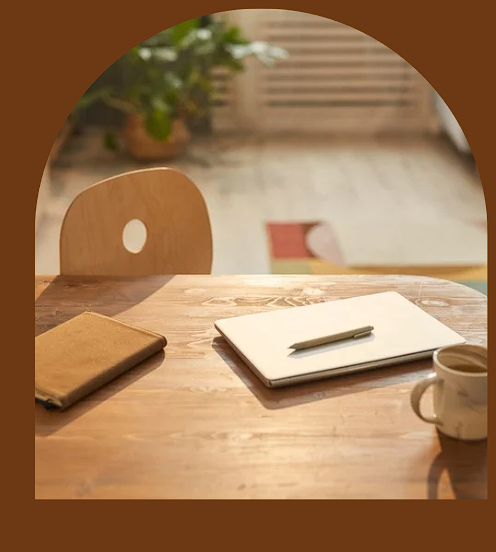

Psicóloga, 29 anos, apaixonada pelas sutilezas da vida. Acredito que cada história merece ser acolhida com respeito, com escuta sensível e com leveza. Se você sente que é tempo de olhar para dentro, de se reconectar consigo, estou aqui para te acompanhar nesse caminho.
Psicóloga formada e pós graduanda. Acredito na escuta sensível como ponto de partida para transformar histórias e fortalecer a autonomia emocional. Estou aqui para te acompanhar, com empatia, acolhimento e propósito, no caminho do autoconhecimento.
Aprofunde-se em quem você é, entenda suas emoções e fortaleça sua autoestima.
Cuidar da mente é o primeiro passo para retomar sua vida com mais presença, sentido e bem-estar.
Compreenda padrões, comunique-se com clareza e construa vínculos mais saudáveis.

Caminhos para equilibrar mente e corpo.

Terapia para quem vive conflitos amorosos ou familiares.
Reconstrua sua percepção de valor pessoal.
Acolhimento em momentos delicados.
Metáforas visuais que convidam à pausa e ao sentir
Andar devagar também é seguir.
Se reconhecer é um processo diário.
Respirar pode ser seu ponto de recomeço.
Permita-se leveza, mesmo nos dias pesados.
Cuidar de si é como florescer: exige tempo e gentileza.
Pensamentos não são verdades absolutas.